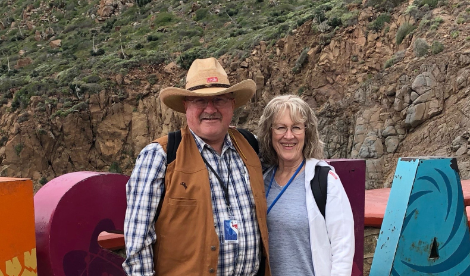

Grand Marshals
Ken and Deeona Cox
Deeona: When I was a young girl I was visiting with my cousin at her Grandmother Stout's house in Hurricane adn we decided to walk to LaVerkin to visit Mona Gifford who had recently moved from the Las Vegas area. I wondered why anyone would want to live in LaVerkin. Then years later I moved here. I've been in LaVerkin since 1974. We came to LaVerkin because we could buy property for livestock and animals. I loved the quiet community and the good people who helped me raise my family here. Another thing that I really liked was it was close to my parents and my father's farm on the river. I'm thankful for all the friends I have here.
Ken: I used to pass through LaVerkin on the way to St. George and the Temple when I was younger. It never occurred to me that I would someday live here. When I came to live in LaVerkin in 1989 I was thrilled because we had property and I was able to have my horses with me. Now we have cattle also. For me, one of the best things about living here is the good people that have become my neighbors and friends. I'm truly thankful for the friendships and associations that we have here.
 Thursday, Dec 1- Gingerbread judging day. Closed t.png)